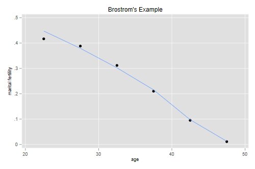
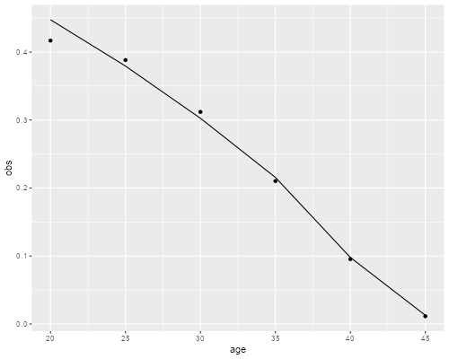

<h2 id="coales-marital-fertility-model">Coale’s Marital Fertility
Model</h2>
<p>Here’s a quick run showing how to fit Coale’s model of marital
fertility using Poisson regression. This is the original example in
Brostrom (1985), Demography, 22:625-631. File <code>brostrom.dat</code>
in the datasets section has the births, exposure, and the five-year
standards <code>na</code> and <code>va</code> in comma-separated
format.</p>

{% include srtabs.html %}

<pre class='stata'>. clear

. import delimited using https://grodri.github.io/datasets/brostrom.dat, clear
(encoding automatically selected: ISO-8859-9)
(5 vars, 6 obs)
</pre>
<pre class='r'>> br &lt;- read.csv("https://grodri.github.io/datasets/brostrom.dat", header=TRUE)
</pre>
<p>We treat births as Poisson and the log of exposure time times natural
fertility as an offset:</p>
<pre class='stata'>. gen os = log(expo * na)

. poisson births va, offset(os)

Iteration 0:   log likelihood = -22.290463  
Iteration 1:   log likelihood = -19.308136  
Iteration 2:   log likelihood = -19.303228  
Iteration 3:   log likelihood = -19.303228  

Poisson regression                                      Number of obs =      6
                                                        LR chi2(1)    =  19.05
                                                        Prob > chi2   = 0.0000
Log likelihood = -19.303228                             Pseudo R2     = 0.3304

─────────────┬────────────────────────────────────────────────────────────────
      births │ Coefficient  Std. err.      z    P>|z|     [95% conf. interval]
─────────────┼────────────────────────────────────────────────────────────────
          va │   .3584115   .0827943     4.33   0.000     .1961376    .5206854
       _cons │  -.0274852   .0599075    -0.46   0.646    -.1449018    .0899315
          os │          1  (offset)
─────────────┴────────────────────────────────────────────────────────────────
</pre>
<pre class='r'>> pr &lt;- glm(births ~ va + offset(log(exposure * na)), data=br, family=poisson)
> pr

Call:  glm(formula = births ~ va + offset(log(exposure * na)), family = poisson, 
    data = br)

Coefficients:
(Intercept)           va  
   -0.02749      0.35841  

Degrees of Freedom: 5 Total (i.e. Null);  4 Residual
Null Deviance:	    20.19 
Residual Deviance: 1.146 	AIC: 42.61
</pre>
<p>We find that <em>log M = -0.027</em> (so <em>M = 0.973</em>) and
<em>m = 0.358</em>, indicating substantial control of fertility.
Brostrom obtained <em>log M = -0.026</em> and <em>m = 0.361</em> using
GLIM. Stata and R usually go an extra iteration.</p>
<p>To check model fit we can compare observed and fitted rates or use a
formal chi-squared test:</p>
<pre class='stata'>. estat gof

         Deviance goodness-of-fit =  1.146498
         Prob > chi2(4)           =    0.8868

         Pearson goodness-of-fit  =  1.133861
         Prob > chi2(4)           =    0.8889

. gen am = age + 2.5

. gen obs = births/expo

. predict fv
(option n assumed; predicted number of events)

. gen fit = fv/expo

. scatter obs am || line fit am, title(Brostrom's Example) ///
>   legend(off) xtitle(age) ytitle(marital fertility)

. graph export brostrom.png, width(500) replace
file brostrom.png saved as PNG format
</pre>
<p></p>
<pre class='r'>> library(dplyr)
> library(ggplot2)
> br &lt;- mutate(br, obs = births/exposure, fit = fitted(pr)/exposure)
> ggplot(br, aes(age, obs)) + geom_point() + geom_line(aes(age,fit))
> ggsave("brostromr.png", width=500/72, height=400/72, dpi=72)
</pre>
<p></p>
<p>The model fits pretty well, although it slightly overestimates
fertility in the youngest age group, 20-24. For comparison, here are the
estimates one would obtain using OLS as in the textbook (page 206).</p>
<pre class='stata'>. gen y = log(obs/na)

. reg y va, noheader
─────────────┬────────────────────────────────────────────────────────────────
           y │ Coefficient  Std. err.      t    P>|t|     [95% conf. interval]
─────────────┼────────────────────────────────────────────────────────────────
          va │   .3930404   .0391997    10.03   0.001     .2842045    .5018764
       _cons │  -.0288292   .0404857    -0.71   0.516    -.1412356    .0835772
─────────────┴────────────────────────────────────────────────────────────────
</pre>
<pre class='r'>> lm(log(obs/na) ~ va, data=br)

Call:
lm(formula = log(obs/na) ~ va, data = br)

Coefficients:
(Intercept)           va  
   -0.02883      0.39304  
</pre>
<p>The results are similar, with <em>logM = -0.29</em> and <em>m =
0.393</em>.</p>
<p>A useful diagnostic plot is <em>log(f(a)/n(a))</em> versus
<em>v(a)</em>; under the model that relationship should be a straight
line, which is then estimated by OLS or Poisson maximum likelihood. For
an example see Box 9.3 in the textbook.</p>
